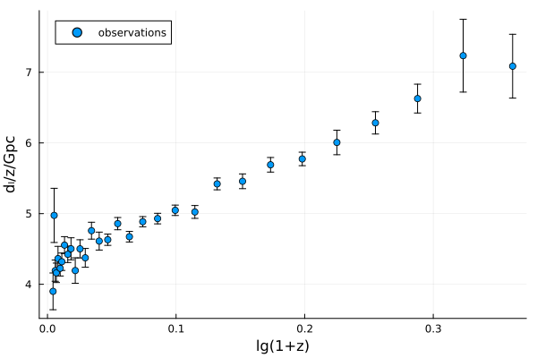
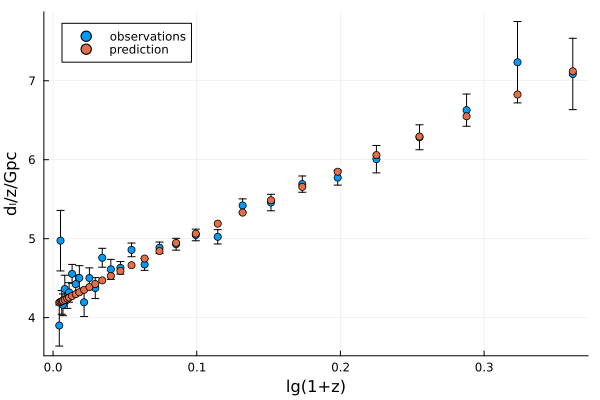
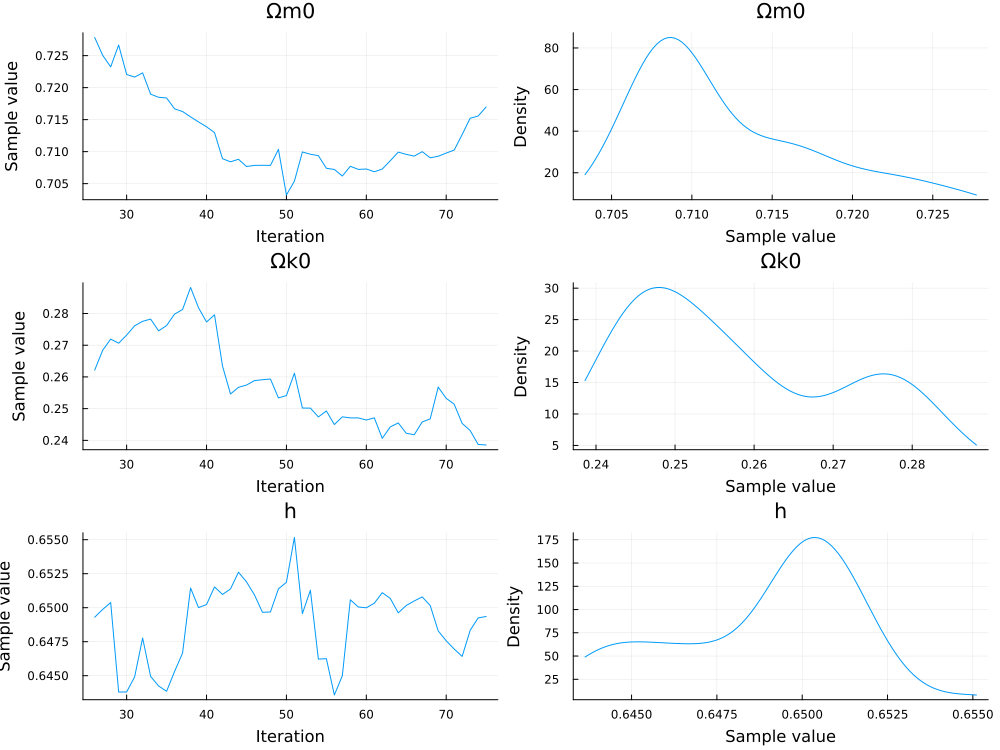

Fitting parameters
This tutorial shows how to perform Bayesian parameter inference on a cosmological model by fitting it to data.
Observed supernova data
We use the data from Betoule+ (2014) of redshifts and luminosity distances of supernovae. Specifically, we use the values and errors in tables F.1 and F.2 (available from the data files data/jla_mub.txt and data/jla_mub_covmatrix.dat):
# TODO: do things properly
# TODO: use full covariance
using LinearAlgebra # TODO: remove after using full covar?
data = [ # https://cmb.wintherscoming.no/data/supernovadata.txt
# z dL/Gpc ΔdL/Gpc
0.010 0.0390 0.0026
0.012 0.0597 0.0046
0.014 0.0587 0.0021
0.016 0.0666 0.0022
0.019 0.0829 0.0033
0.023 0.0972 0.0025
0.026 0.1123 0.0032
0.031 0.1412 0.0037
0.037 0.1637 0.0043
0.043 0.1936 0.0067
0.051 0.2139 0.0092
0.060 0.2701 0.0077
0.070 0.3062 0.0093
0.082 0.3902 0.0098
0.097 0.4473 0.0123
0.114 0.5279 0.0091
0.134 0.6510 0.0116
0.158 0.7384 0.0118
0.186 0.9087 0.0134
0.218 1.0747 0.0163
0.257 1.2971 0.0189
0.302 1.5172 0.0274
0.355 1.9243 0.0297
0.418 2.2813 0.0436
0.491 2.7943 0.0507
0.578 3.3373 0.0552
0.679 4.0789 0.1179
0.799 5.0213 0.1262
0.940 6.2302 0.1917
1.105 7.9947 0.5692
1.300 9.2121 0.5874
]
data = (zs = data[:,1], dLs = data[:,2], ΔdLs = data[:,3], C = Diagonal(data[:,3] .^ 2))
using Plots
scatter(@. log10(data.zs+1), @. data.dLs / data.zs; yerror = data.ΔdLs ./ data.zs, xlabel = "lg(1+z)", ylabel = "dₗ/z/Gpc", label = "observations")
Predicting luminosity distances
To predict luminosity distances
\[d_L = \frac{r}{a} = \chi \, \mathrm{sinc} (\sqrt{k} \chi), \qquad \text{where} \qquad \chi = c \, (t_0 - t)\]
theoretically, we solve the standard ΛCDM model:
using SymBoltz
M = RMΛ()
prob = CosmologyProblem(M, Dict([M.r.Ω₀, M.m.Ω₀, M.K.Ω₀, M.Λ.Ω₀, M.g.h, M.r.T₀] .=> [9.3e-5, 0.26, 0.08, 1 - 9.3e-5 - 0.26 - 0.08, 0.7, NaN]); th = false, pt = false)
function solve_with(prob, Ωm0, Ωk0, h; Ωr0 = 9.3e-5, bgopts = (alg = SymBoltz.Tsit5(), reltol = 1e-7, maxiters = 1e3))
ΩΛ0 = 1 - Ωr0 - Ωm0 - Ωk0
prob = remake(prob, Dict(
M.g.h => h,
M.r.Ω₀ => Ωr0,
M.m.Ω₀ => Ωm0,
M.K.Ω₀ => Ωk0,
M.Λ.Ω₀ => ΩΛ0
), build_initializeprob = false) # bypass unnecessary initialization for performance
return solve(prob; bgopts)
end
function dL(z, sol::CosmologySolution)
M = sol.prob.M
t = SymBoltz.timeseries(sol, M.g.z, z)
return SymBoltz.distance_luminosity(sol, t) / SymBoltz.Gpc
end
# Show example predictions
zs = data.zs
sol = solve_with(prob, 0.26, 0.08, 0.7)
dLs = dL(zs, sol)
scatter!(@. log10(zs+1), dLs ./ zs; label = "prediction")
Bayesian inference
To perform bayesian inference, we use the Turing.jl package:
using Turing
@model function supernova(data, prob)
# Parameter priors
Ωm0 ~ Uniform(0.0, 1.0)
Ωk0 ~ Uniform(-1.0, +1.0)
h ~ Uniform(0.1, 1.0)
sol = solve_with(prob, Ωm0, Ωk0, h)
if Symbol(sol.bg.retcode) != :Terminated
println("Discarding solution with illegal parameters Ωm0=$Ωm0, Ωk0=$Ωk0")
Turing.@addlogprob! -Inf
return nothing # illegal parameters
end
# Theoretical prediction
dLs = dL(data.zs, sol)
# Compare predictions to data
data.dLs ~ MvNormal(dLs, data.C) # multivariate Gaussian # TODO: full covariance
end
# TODO: speed up: https://discourse.julialang.org/t/modelingtoolkit-odesystem-in-turing/115700/
sn = supernova(data, prob) # condition model on data
chain = sample(sn, NUTS(), MCMCSerial(), 50, 1)Chains MCMC chain (50×15×1 Array{Float64, 3}):
Iterations = 26:1:75
Number of chains = 1
Samples per chain = 50
Wall duration = 31.41 seconds
Compute duration = 31.41 seconds
parameters = Ωm0, Ωk0, h
internals = lp, n_steps, is_accept, acceptance_rate, log_density, hamiltonian_energy, hamiltonian_energy_error, max_hamiltonian_energy_error, tree_depth, numerical_error, step_size, nom_step_size
Summary Statistics
parameters mean std mcse ess_bulk ess_tail rhat e ⋯
Symbol Float64 Float64 Float64 Float64 Float64 Float64 ⋯
Ωm0 0.7125 0.0060 0.0034 4.0453 12.3624 1.3122 ⋯
Ωk0 0.2581 0.0140 0.0110 1.6955 18.3661 1.9950 ⋯
h 0.6489 0.0027 0.0007 14.8029 32.6387 0.9944 ⋯
1 column omitted
Quantiles
parameters 2.5% 25.0% 50.0% 75.0% 97.5%
Symbol Float64 Float64 Float64 Float64 Float64
Ωm0 0.7056 0.7079 0.7099 0.7161 0.7263
Ωk0 0.2392 0.2469 0.2544 0.2716 0.2817
h 0.6438 0.6467 0.6498 0.6508 0.6525
As we see above, the MCMC chain displays a summary with information about the fitted parameters, including their posterior means and standard deviations. We can also plot the chains:
using StatsPlots
plot(chain)
TODO: take som inspiration from the Catalyst tutorial